Project Navigation¶
When a project is open, navigate between sites, PTP Links, PMP Network Devices, Mesh Links and PMP links using the menu options in the left hand panel. The following example shows one open project, with several sites, PTP Links, Network Devices, Mesh Links and PMP Links (Navigation Tree):
Navigation Tree¶
To return to the full map view at any time click on 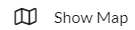 at the top of the left hand panel
To search for sites, PTP Links, Network Devices, Mesh Links or PMP Links, enter the search string in the search box
Menu Search Option¶
Click on an entry in the search results to go to that item.
To adjust the left menu panel, click on the vertical line of the panel, then move it right or left to change the width.
To collapse the panel, move the vertical line of the panel to the extreme left, which will reduce the menu names to icons as shown in the table below:
To expand the panel, click on the double right arrow at the bottom,
Icon |
Menu Name |
|---|---|
|
|
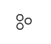 |
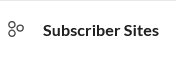 |
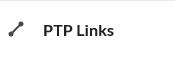 |
|
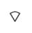 |
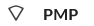 |
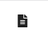 |
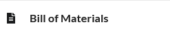 |
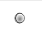 |
|
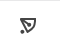 |
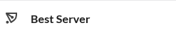 |
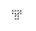 |
Click on a menu option to open it for viewing and updating.
Project¶
To display the Project page, click on Project. See Project Settings.
When a project has been changed the  symbol in the top menu bar will be shown in red. To save a project, click
symbol in the top menu bar will be shown in red. To save a project, click  and it will turn black when there are no changes in the project. To discard all changes made to a project, click the symbol in the top menu bar. This is shown in red when there are changes to be discarded and will turn black when there are no unsaved changes in the project.
and it will turn black when there are no changes in the project. To discard all changes made to a project, click the symbol in the top menu bar. This is shown in red when there are changes to be discarded and will turn black when there are no unsaved changes in the project.
Sites¶
To display the list of all network sites within the project, click on the “Network Sites” menu option. To display the list of all subscriber sites within the project, click on the “Subscriber Sites” menu option. For either site list, see Displaying the Sites List. The total number of network or subscriber sites is shown in the box by the side of each name.
PTP Links¶
To display the list of all the PTP Links click on the “PTP Links” menu option. The total number of PTP Links in the project is shown in the box by the side of the name.
PMP¶
To display the list of all PMP Network Devices and associated PMP links and Mesh links, click on the “PMP” menu option. The total number of PMP Network Devices in the project is shown in the box by the side of the name.
Bill of Materials¶
To view the Bill of Materials (BOM) for the whole project, click on the “Bill of Materials” menu option. For attribute descriptions, see Bill of Materials for Project.
Antennas¶
To see the available antennas and to create, edit and delete custom antennas for Unlicensed PTP and Subscriber Modules, click on the “Antennas” menu option. See Antennas.
Best Server¶
To automatically determine which ND is the best option for all subscriber sites, click on the “Best Server” menu option. This requires the PMP Network Device to be created prior to running. See Best Server Analysis.
Terragraph Planner¶
To automatically design a cnWave 60 GHz network for either a distributed network or mesh only, click on the “Terragraph Planner” menu option. This requires the relevant sites to be added to the project and lidar data for the area. See Terragraph Planner Configuration.